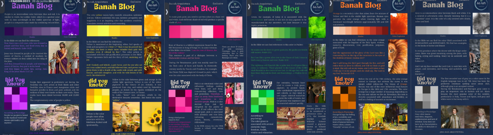
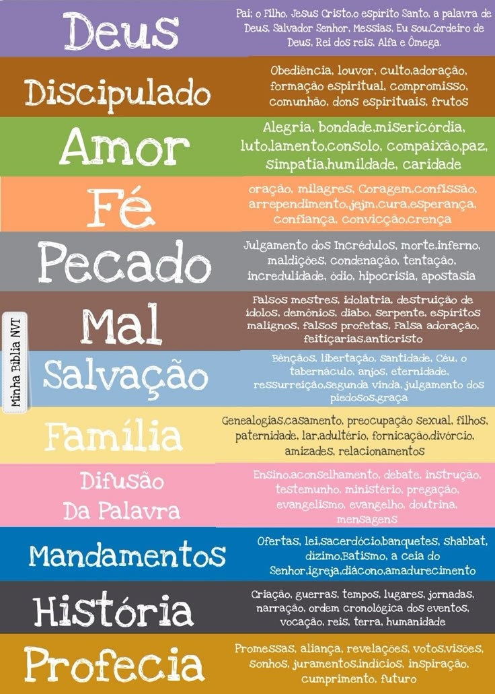

CORES
ESTUDO BIBLICO
Explore o universo das cores, suas propriedades físicas, percepção visual e aplicações na arte, design e tecnologia.
Explore o universo das cores, suas propriedades físicas, percepção visual e aplicações na arte, design e tecnologia.

Particularmente, eu fiz um estudo sobre algumas cores e seus significados na biblia, foi um
momento único do qual eu pude aprender não apenas sobre a palavra mas, sobre as cores. Eu
colocava
em um Blog nos status.
Na Bíblia, as cores não aparecem apenas como elementos visuais, mas carregam significados
espirituais, simbólicos e culturais profundos, muitas vezes ligados à santidade, ao poder de
Deus, à purificação e às promessas divinas. Cada cor pode representar uma mensagem dentro do
contexto bíblico, ajudando a transmitir ensinamentos e princípios espirituais.
O branco, por exemplo, é amplamente associado à pureza, santidade e justiça. Ele aparece em
passagens que descrevem vestes celestiais e a presença de Deus, simbolizando a ausência de
pecado e a perfeição espiritual. Já o vermelho está frequentemente ligado ao sangue, sacrifício
e redenção, representando principalmente o sacrifício de Jesus Cristo pela humanidade e também a
vida que é dada através desse sangue.
O azul na Bíblia está relacionado ao céu, à divindade e aos mandamentos de Deus. Ele era usado
em elementos do tabernáculo, simbolizando a ligação entre o céu e a terra, reforçando a ideia de
obediência e autoridade divina. O púrpura (ou roxo) é uma cor associada à realeza, riqueza e
autoridade, sendo muito utilizada em vestes de reis e objetos sagrados, indicando poder e
majestade.
Já o dourado representa glória, santidade e a presença de Deus. Ele era utilizado em objetos do
templo, como a arca da aliança, simbolizando algo precioso, incorruptível e divino. O verde, por
sua vez, está ligado à vida, crescimento e renovação, refletindo a criação de Deus e a esperança
de restauração espiritual.
Em conjunto, as cores na Bíblia ajudam a transmitir mensagens espirituais profundas, reforçando
ensinamentos sobre fé, pureza, sacrifício, autoridade e vida. Elas não são apenas detalhes
visuais, mas símbolos que enriquecem a compreensão da relação entre Deus e a humanidade.

Na arte aprendemos vermelho, azul e amarelo, mas em telas e tecnologia as cores primárias são diferentes
Quando misturamos luzes coloridas primárias (RGB), o resultado tende ao branco.
Vermelho costuma transmitir energia e urgência, azul passa confiança e calma, e amarelo chama atenção rapidamente.
SUA BIBLIA COLORIDA
Objetivo: Aprender a separar seu estudo de uma forma coerente para que você aprenda da melhor forma.
Antes de começar o estudo:
Separe a Bíblia (física ou digital)
Tenha canetas coloridas ou marca-texto
Defina um caderno ou fichário para anotações.
Definição do código de cores
Crie um sistema para organizar o estudo:
Vermelho = sacrifício, sangue de Cristo, redenção
Azul = céu, mandamentos, autoridade de Deus
Amarelo/Dourado = glória de Deus, santidade, promessas
Verde = vida, crescimento espiritual, esperança
Branco = pureza, perdão, justiça
Roxo = realeza, poder, reino de Deus
Leitura do texto bíblico
Escolha um capítulo ou versículo por dia
Leia com atenção e calma
Tente entender o contexto da passagem
REFLITA SOBRE O VERSICULO
Promessas de Deus, amarelo
Versículos sobre Jesus, vermelho
Mensagens sobre fé, verde
